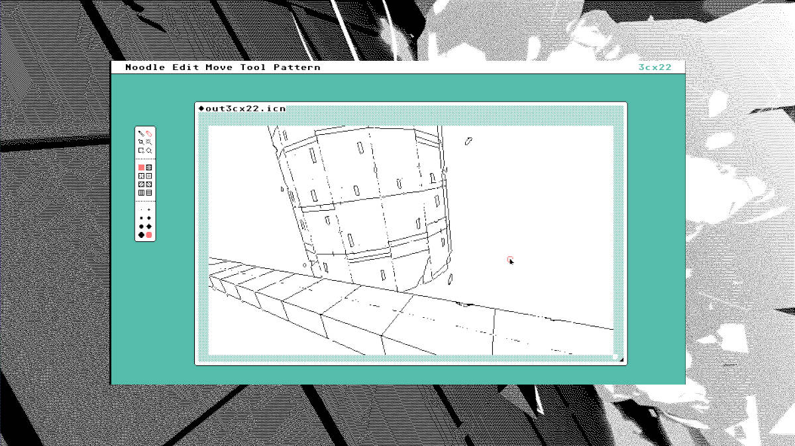

noodle

Noodle is currently used in the creation of various monochromatic illustration projects such as the Neauismetica, it shares a lot of the functionalities of the sprite sheet editor Nasu.
Noodle is written in the Uxntal programming language and is compiled with the Uxn assembler, it features a handful of patterns, a pixel-perfect clean up brush, zoom functionalities and can export and import bit maps.
Download NoodleTry running Noodle on the Uxn Emulator on Nintendo DS.

- Getting started
- Controls
- Renaming a file
- Invert images
- Saving a file
- Importing a file
- New file
- Opening a TGA
- Resize canvas
- Erase
- Pattern menu
- Pen tool
- Brush tool
- Line tool
- Magic tool
- Rectangle tool
- Zoom tool
- License
Getting Started
Noodle is distributed as a rom for the Uxn system, you must have an emulator available for your machine, for more details, see the Uxn Guide. To begin, navigate to the folder in which you want your project files to be saved, and enter the following to launch the noodle.rom:
./path/to/uxnemu ~/roms/noodle.rom
Controls
- right-click and escape
- erase
- ← ↑ → ↓
- move zoom
- spacebar or shift
- toggle zoom
- tab
- invert image
- backspace
- blank canvas
- 1 - 8
- select pattern
- [ ]
- select brush size
- ctrl + n
- clear
- ctrl + r
- rename
- ctrl + o
- load
- ctrl + s
- save
- e
- line tool
- q
- pen tool
- w
- brush tool
- t
- rectangle tool
- r
- magic tool
- y
- zoom tool
Re-naming a file
The default filename reads untitled.icn. To change it, click on the text. The text field will blink, allowing you to type a new file name.
Press ctrl + shift + r to erase filename, rather than using backspace.
Invert images
To invert the image, press tab.
Saving file

To save a file: ctrl + s.
The little diamond in the top left corner of the canvas denotes the save state. The diamond has two states: The black state indicates that the file was saved, the red state indicates that the file has unsaved changes.
Loading file
To load an file, replace the active filename and write the name of the .chr file you wish to import, and click enter. To import the file: ctrl + o.
If switching between projects, you can have multiple instances of the Uxn emulator open at various locations. Holding the alt key while clicking on the load-icon, will load the file as a 1bpp sprite sheet.
New file
To load a blank file: ctrl + n.
All changes will be lost, make sure to re-name your file.

Opening a TGA
It is possible to open a TGA file with Noodle. When exporting a TGA from another program, make sure to uncheck RLE compression, and to select 'top left' as origin.
Resize canvas
To resize the canvas, pull on the black corner on the bottom right of the window. Adjusting the canvas size changes the number on top, next to the pattern menu. It's also possible to resize it by clicking alt + arrows.
Only resize the canvas at the start of a project, otherwise it will mess up your drawing.

Erase
It's possible to use the following tools to erase: brush tool, line tool, pen tool and rectangle tool. Select the tool you wish to use as an eraser, press escape key to toggle to erase mode, or click on a brush size in the top menu until it switches to a shape with a contour rather than one that is opaque.
It's also possible to erase using a pattern.
To erase the whole canvas press backspace.
Pattern menu

A set of 8 patterns to draw with. To change pattern select numbers 1 - 8.
The default pattern is black. Select the brush, or rectangle tool first, and then a pattern.
Pen

A tool to draw thin single-pixel drawings on the canvas. The shortcut to select the pen tool is q.
This tool can only ever be 1 pixel. Erase by right-clicking.
Brush tool

A tool to draw brush-like strokes on the canvas. To increase or decrease brush size use the box brackets [ ]. The shortcut to select the brush tool is w. Erase by right-clicking.
To draw using a pattern, select a style from the pattern menu and toggle between each pattern using the numbers 1 - 8.
Line tool

A tool to draw straight lines on the canvas. While the line is red it's possible to change its angle.
Lines will always be 1 pixel wide.
Magic tool

A tool to clean up lines. The shortcut to select the pen tool is r
This tool is useful to remove excess pixels when drawing sharp edges with the pen tool.
Rectangle tool

A tool to draw rectangles on a canvas. The rectangle tool shortcut is t.
To draw using a pattern, select a style from the right menu.
Zoom tool

For a more detailed view of a drawing, select the zoom tool (shortcut is y), or press on the spacebar or shift. The magnifying glass has a little circle next to it when zoomed in.
Use the arrows to move around the canvas while zoomed in, and press the spacebar, or shift key to return to the normal view. If you toggle zoom again after having moved with the arrows, Noodle will remember this new position and zoom in on that exact point on the canvas. If you want to zoom in on another far-away part of the canvas, select the zoom tool and click on the area you wish to modify.
license
The license applies to all the documented projects, the projects themselves and their assets. The source code of this website and our apps are under the MIT License, but the assets and text content of this website and of our apps are under the BY-NC-SA4.0 License. We are happy to pass knowledge, and that others can learn from our projects, improve on them, or make them into something else that is useful, but please, do not try to sell our projects as is under a different name. Doing so is very lazy, and disrespectful to us.
DO NOT resell or mint our work.
You can find our more recent projects on Sourcehut.